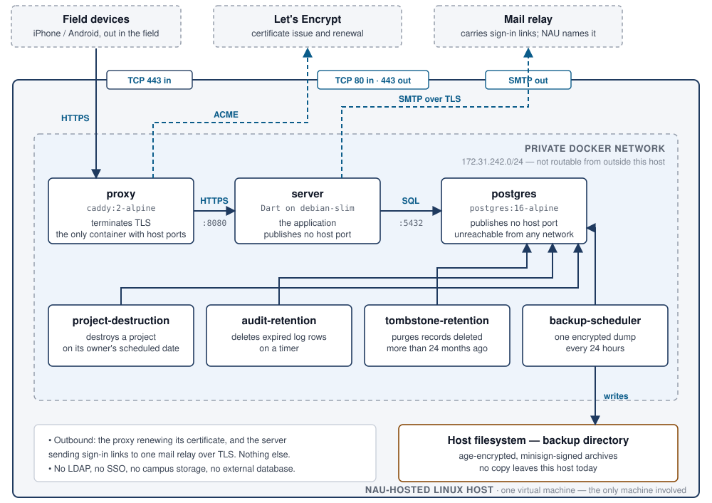

One Linux host · seven long-running containers · two inbound TCP ports, 443 and 80 · one outbound service dependency, a mail relay

| Container | Image | Reachable from | What it does |
|---|---|---|---|
| proxy | caddy:2-alpine |
Host ports 443 and 80 | Terminates TLS and obtains its own certificate. Port 80 serves the ACME challenge only. The single entry point. |
| server | Dart binary on debian:bookworm-slim |
The proxy container only | The application: sign-in, sync, project membership. Publishes no host port — the compose file removes it explicitly. Its one outbound connection is to the mail relay, to send sign-in links. |
| postgres | postgres:16-alpine |
The other six containers | The database. No host port in any configuration, so it is not reachable from the network at all. |
| audit-retention | Same image as server |
Nothing — it only makes outgoing queries | Applies retention windows: a year for sign-in events, 180 days for sync traffic, 30 days for decided join requests. |
| backup-scheduler | Built on postgres:16-alpine |
Nothing — it only makes outgoing queries | One encrypted, signed database dump every 24 hours, into a directory on the host disk. |
| project-destruction | Same image as server |
Nothing — it only makes outgoing queries | Destroys a project on the date its owner scheduled, so no device has to be online for the deletion to happen. |
| tombstone-retention | Same image as server |
Nothing — it only makes outgoing queries | Purges records deleted more than 24 months ago (measured from when this server accepted the delete), so the database does not grow without bound. |